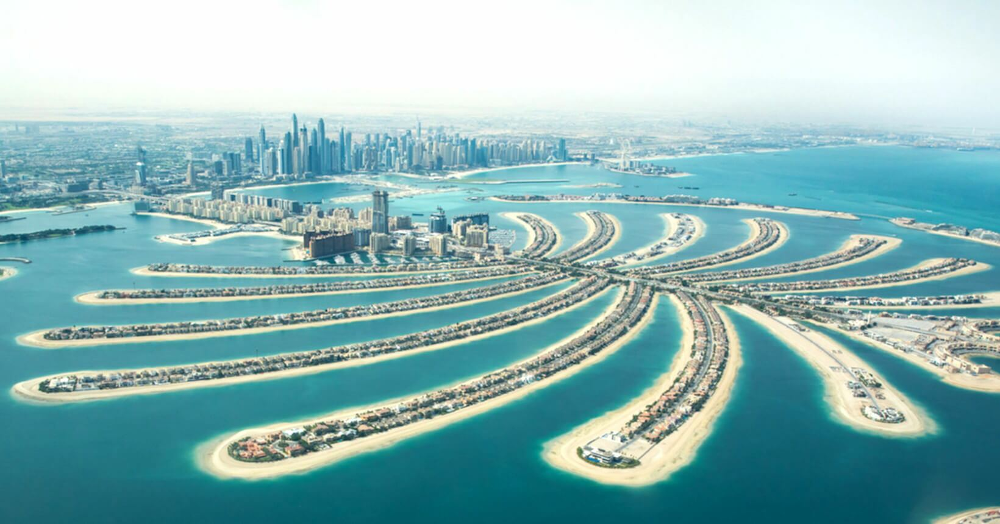
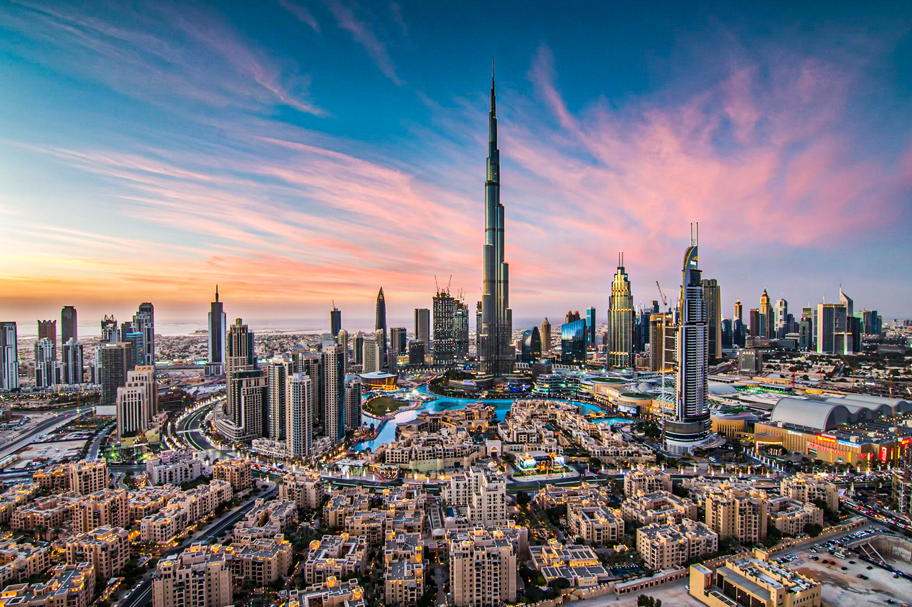
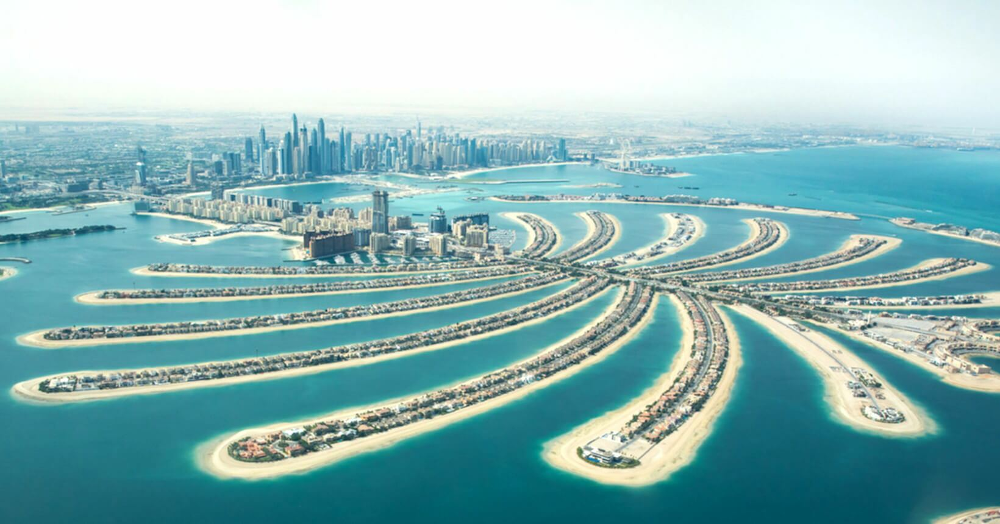
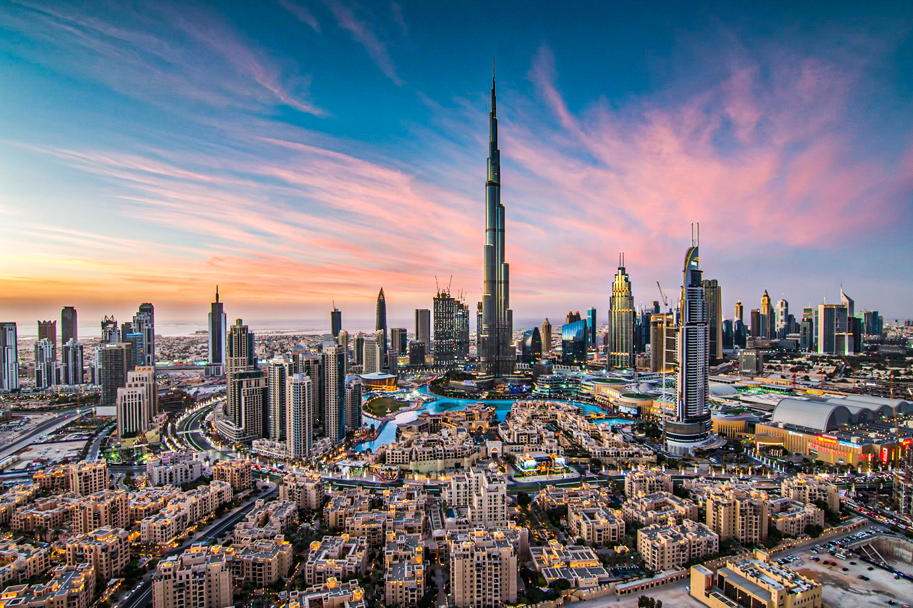

Dubai (em árabe: دبيّ, Dubayy) é a maior cidade e emirado de mesmo nome dos Emirados Árabes Unidos (uma federação de monarquias absolutas hereditárias árabes).[1] O Emirado de Dubai está localizado na costa do golfo Pérsico, sendo um dos sete emirados que compõem o país. Dubai é o emirado mais populoso entre os sete emirados, com aproximadamente 2 262 000 habitantes. Está localizada ao longo da costa sul do golfo Pérsico na península Arábica na Ásia. O município muitas vezes é chamado de Cidade de Dubai para diferenciá-lo do emirado homônimo. A cidade é conhecida mundialmente pela sua economia extremamente desenvolvida e por seus enormes arranha-céus e largas avenidas.
Existem registros da existência da cidade pelo menos 150 anos antes da formação dos EAU. Dubai divide funções jurídicas, políticas, militares e econômicas com os outros emirados, embora cada emirado tenha jurisdição sobre algumas funções, tais como a aplicação da lei civil e fornecimento e manutenção de instalações locais. Dubai tem a maior população e é o segundo maior emirado por área, depois de Abu Dhabi.[2] Dubai e Abu Dhabi são os únicos emirados que possuem poder de veto sobre questões de importância nacional na legislatura do país. Dubai tem sido governado pela dinastia Al Maktoum desde 1833. O atual governante de Dubai, Mohammed bin Rashid Al Maktoum, é também o Primeiro-Ministro e Vice Presidente dos Emirados Árabes Unidos.
A receita do emirado é proveniente do turismo , do comércio, do setor imobiliário e dos serviços financeiros.[3] As receitas de petróleo e gás natural contribuem com menos de 6% (2006)[4] do PIB de 37 bilhões de dólares em 2005.[5] O setor imobiliário e da construção civil, por outro lado, contribuiu com 22,6% da economia em 2005, antes do atual boom da construção em larga escala.[6] Dubai tem atraído a atenção mundial por seus projetos imobiliários[7] e acontecimentos esportivos.
Fonte: Wikipedia

